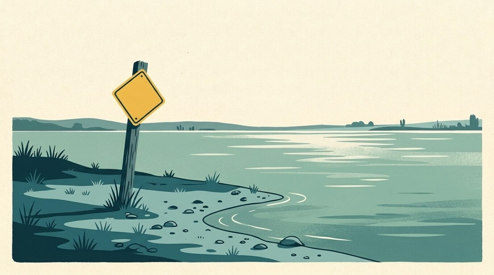

In short
A cyanobacteria bloom shows as a coloured, cloudy layer (turquoise-green, reddish, yellow-brown) or floating spongy clumps. The canton of Vaud then recommends avoiding swimming and not letting animals drink or swim. In dogs, ingesting toxins can be fatal; in people, effects most often resemble gastrointestinal symptoms.
How to recognise them
According to the canton of Vaud, blooms often appear within days and vanish as fast. They take the form of streaks or spongy, sticky mats floating on the surface, sometimes deposits on the shore, and may give off unpleasant smells. Warning signs: a coloured (turquoise-green, reddish, yellow-brown) and cloudy layer, where the bottom is not visible in shallow water.
What effects?
If swallowed, toxins from some species can kill pets such as dogs. In people, effects resemble gastrointestinal symptoms (stomach ache, diarrhoea, vomiting), even flu-like illness (fever, headache and sore throat, joint pain); on contact, toxins can irritate skin and mucous membranes. Most of the time effects are mild, but young children are more affected, as they are more exposed while swimming. The canton notes that harmful blooms are relatively rare.
What to do
- Stop young children from drinking lake water or putting beach pebbles in their mouths.
- Shower after swimming and dry yourself thoroughly.
- If you see a coloured, cloudy layer or spongy clumps: avoid swimming and activities in contact with the water.
- If symptoms appear after suspect contact: contact your doctor or the on-call doctors’ line (0848 133 133).
- Do not let animals swim or drink; if poisoning is suspected (in dogs: diarrhoea, vomiting, tremors or breathing difficulty), go to a vet without delay.
And water quality?
The canton notes that identifying these micro-organisms and assessing their danger in real time on every beach is difficult: caution must prevail when the phenomenon appears. For bacteriological analyses, see how to check water quality.
Nothing here replaces a first-aid course or a doctor’s advice. The current water and wind, beach by beach, are in the My Lake app.
Lake Geneva’s water right now
Each beach’s water temperature is in the My Lake app, updated every three hours.
Disclaimer. This article gives general information taken from the sources cited; it is not medical advice. Cold-water swimming puts real strain on the heart and can be dangerous: talk to a doctor before you start, especially with a heart condition, high blood pressure or during pregnancy. Never swim alone and follow lifeguards’ instructions. You swim at your own risk; in an emergency, call 144 in Switzerland or 112.